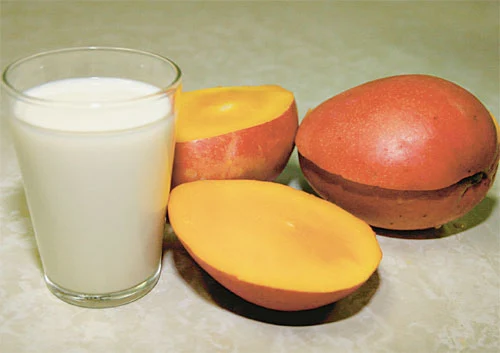
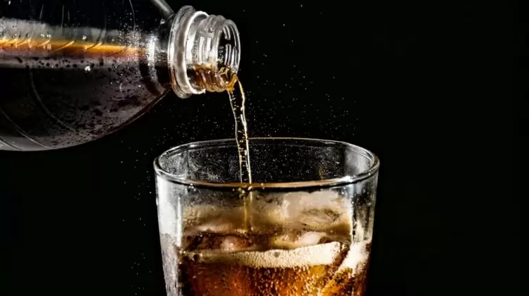
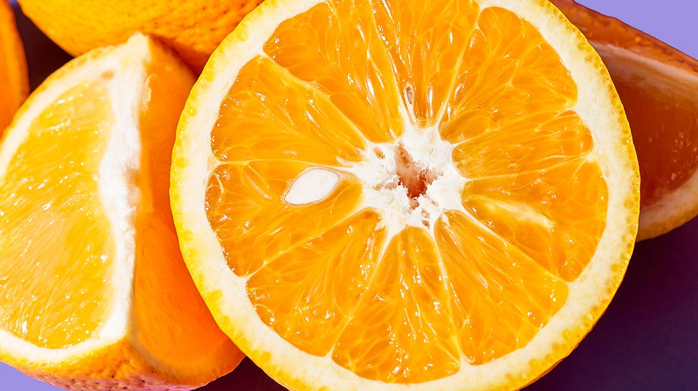
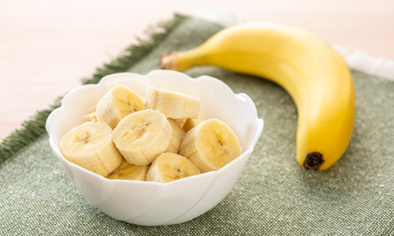

É frequente ouvir falar que tomar leite com manga faz mal, mas essa mistura é rica em nutrientes e faz muito bem à saúde. O leite é um alimento completo, com diversos nutrientes e só é contraindicado em casos de intolerância à lactose, enquanto a manga é uma fruta rica em fibras e enzimas que facilitam a digestão, ajudando a regular o intestino.
Na verdade, o que pode aumentar a celulite é o açúcar que os refrigerantes têm, não o gás das bebidas. As bolhas que se formam devido ao gás nos refrigerantes não se relacionam com a celulite, pois não contêm calorias e são eliminados do intestino.
Essa é uma das principais afirmações usadas de forma incorreta. A laranja é, sim, uma fonte importante de vitamina C. Porém, outros alimentos possuem uma quantidade mais representativa desse nutriente, como o morango, o kiwi, a acerola, a goiaba, entre outros. Por exemplo, enquanto 100 gramas de laranja têm, em média, 57 mg de vitamina C, 100 gramas de kiwi somam 72 mg.
Banana não evita as câimbras, para evitá-las os nutrientes como o potássio devem estar presentes e, todas as refeições. Muitas vezes as dores são causadas por estresse e não pela má alimentação, portanto, nesses casos a banana não pode resolver.
A ideia é baseada em afogamentos, comuns a quem ingeriu grandes quantidades de comida e bebidas alcoólicas. O que ocorre é que durante o nado, as alterações fisiológicas são drásticas e podem provocar fortes dores viscerais e, possivelmente, afogamentos. Isso não ocorre durante o banho.
Leia todo o conteúdo para ter certeza de que o que está proposto no título é confirmado pelo restante do texto e se a fonte é confiável também.
Erros de português podem ser cometidos por todas as pessoas, mas fake news geralmente são elaboradas por pessoas sem conhecimento prévio no assunto e têm maior probabilidade de cometerem erros na escrita.
Os estudos e pesquisas estão sempre trazendo novas respostas sobre alimentação. A ciência não é atemporal, por isso, verifique a data da notícia, pois, o que era verdade ano passado, hoje pode já não ser mais.
Desconfie de recomendações que parecem solucionar um grande problema, pois não existe um único alimento que poderá te trazer total saúde ou curar doenças. O que existem são hábitos alimentares saudáveis que, combinados a um estilo de vida saudável (ou seja, prática de esportes, boas horas de sono, entre outros), podem contribuir para uma melhora na qualidade da sua saúde.
Se algum dos pontos acima, após verificados, colocarem uma pulguinha atrás da sua orelha, não compartilhe! Outras pessoas podem não ter o mesmo conhecimento que você ganhou aqui, podendo disseminar por aí uma notícia falsa e uma orientação que pode ser prejudicial à saúde. Não basta só saber como identificar fake news, também é necessário quebrar o ciclo delas!
Acesse o formulário e teste seus conhecimentos